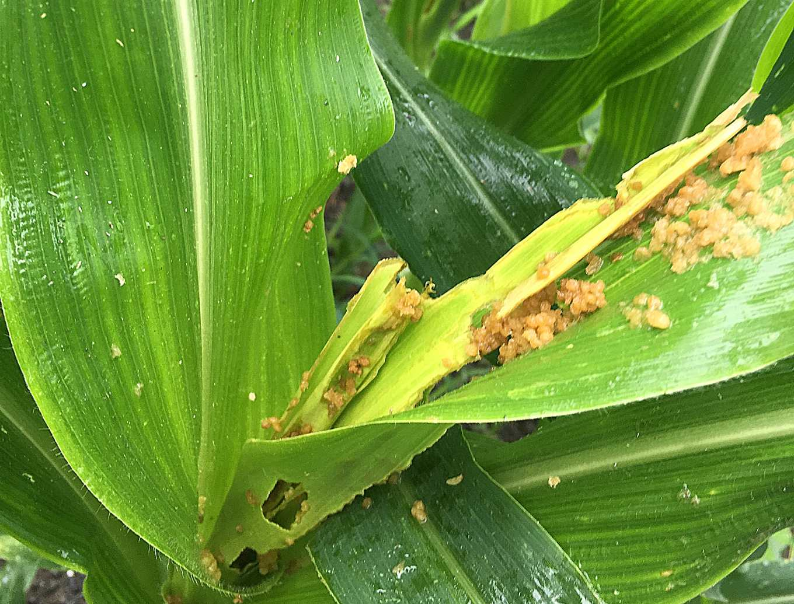
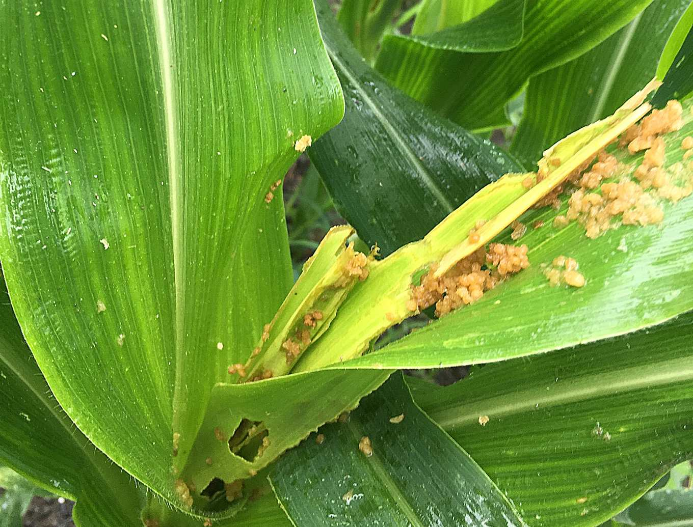
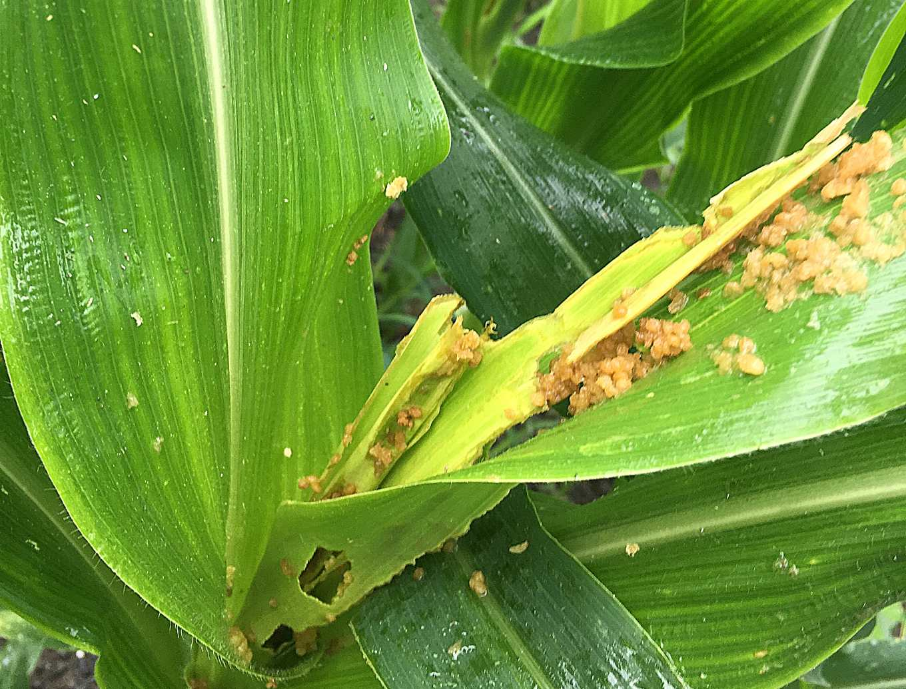

秋行軍蟲的世界
簡介
食性
習性
棲地
特徵
生活史
危害
侵台史
天敵
防治
測驗
問答
找碴
製作團隊
參考資料
草地貪夜蛾
秋行軍蟲為夜行性昆蟲，喜歡躲在陰暗處或是藏匿在玉米芯內（為了吃較嫩的植株），因此應該仔細觀察作物上有無出現以下危害特徵：
在心葉周圍出現咬痕。
一坨坨淺咖啡色、濕濕的糞便殘留。
蟲體辨識看
頭部有黃色Y字型、末節有四個點
。

幼蟲喜好躲在玉米心葉處取食，葉上殘留大量糞便
資料來源:
天下雜誌
截至108/7/22由台灣各地方政府提供的秋行軍蟲的通報地點，
以上經緯度皆為行政院農委會動植物防疫檢疫局提供
 在心葉周圍出現咬痕。
一坨坨淺咖啡色、濕濕的糞便殘留。
蟲體辨識看頭部有黃色Y字型、末節有四個點。

幼蟲喜好躲在玉米心葉處取食，葉上殘留大量糞便
資料來源:天下雜誌
在心葉周圍出現咬痕。
一坨坨淺咖啡色、濕濕的糞便殘留。
蟲體辨識看頭部有黃色Y字型、末節有四個點。

幼蟲喜好躲在玉米心葉處取食，葉上殘留大量糞便
資料來源:天下雜誌